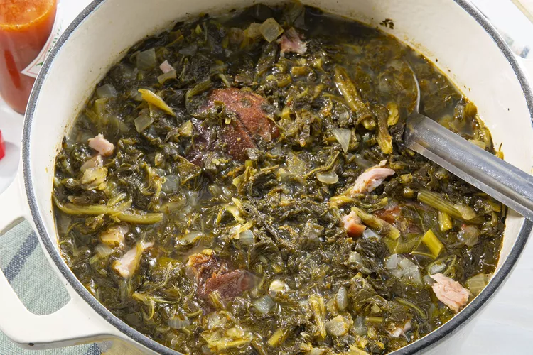

Southern Style Collard Greens

Description
This classic Southern collard greens recipe is slow-simmered to perfection with savory ham hocks, just like my mama used to make.
Seasoned with a blend of spices, this soul food staple brings comfort and tradition to the table, making it the perfect side dish for family gatherings or Sunday dinners.
Ingredients
- 2 medium sweet onions, finely chopped
- 2 smoked ham hocks
- 3(32 ounce) containers of chicken broth
- 3(1 pound) packages collard greens, trimmed
- 1/3 cup apple cider vinegar
- 2 tablespoons white sugar
- 1 1/2 teaspoons salt, or to taste
- 3/4 teaspoons ground black pepper, or to taste
Steps
- Gather all ingredients
- Combine onions, ham hocks, and garlic in a stockpot; add chicken broth. Cook mixture over medium heat until meat is falling off the bone, 1 to 2 hours.
- Stir collard greens, vinegar, sugar, salt, and pepper into the broth mixture; cook until greens have reached desired tenderness, about 2 more hours.
Recipe Credit
This recipe was created by tybright31 on AllRecipes
Return